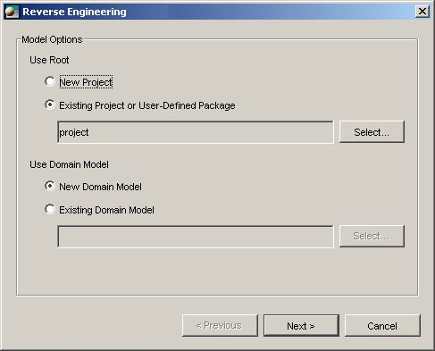
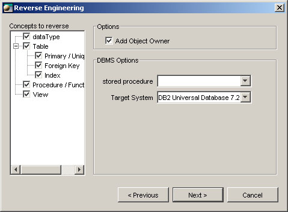
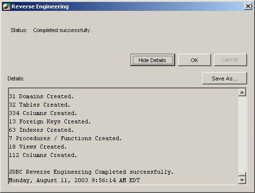
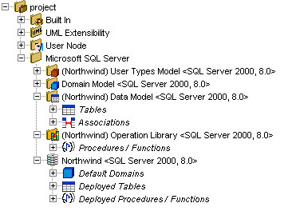

Reverse engineering
The reverse engineering function generates models from specifications contained in
a database model. The DBMS interface obtains database specifications by querying
the system catalog’s tables directly, either by using SQL statements, or by using the
JDBC metadata API functions.
NOTE: Before doing the reverse engineering of a database, of course, you must establish a connection.
(See ODBC Connection or JDBC Connection)
To start the reverse engineering, in the main menu, choose: Tools > Database > Reverse Engineering.
Model options

Select where you want to create the reversed model.
Use root
- New Project: All model information will be created in a new project.
- Existing project or user-defined package: All model information will be created in the selected project or user-defined package.
Use domain model
- New Domain Model: Reverse will create all necessary domains in a new domain model.
- Existing domain model: Reverse will look for an existing domain in this existing domain model; if an existing domain can't be found, a new one will be created into the existing domain model.
DBMS options and concepts to reverse
Select the concept you want to extract from the database. The concepts are specific
to each DBMS interface.

Generic DBMS interface
Select the reverse engineering options. These options are specific to each target
system. You must therefore specify which target system you are using.
Object scope
You can restrict the scope of the reverse engineering process by dismissing some occurrences.

Report
A report containing information on the database and the created objects is generated.
A log file is also generated (reverse.log), in the user’s home directory. The
latter contains the information displayed in the Details section of the reverse engineering
window.

Created models

A deployment around a database is created in a user-defined package. Now you have to create the diagrams,
adding the graphicals representations and do the layout.